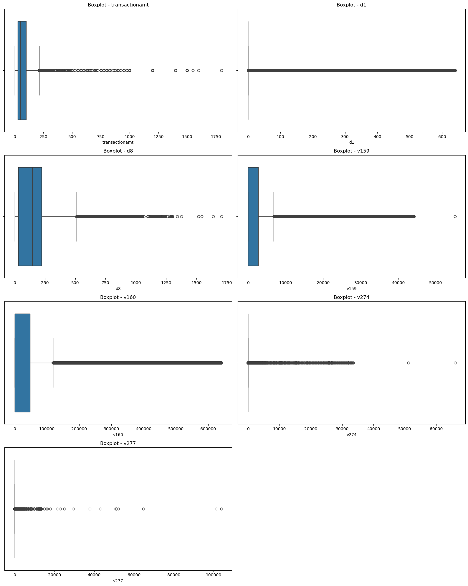

Análisis Exploratorio de Datos (EDA)#
Librerias#
import pandas as pd
import matplotlib.pyplot as plt
import seaborn as sns
from scipy.stats import anderson
# Cargar el dataset
df = pd.read_csv("dataset_final.csv")
# Ver dimensiones
print("Dimensiones del dataset:")
print(f"Filas: {df.shape[0]:,}")
print(f"Columnas: {df.shape[1]:,}")
Dimensiones del dataset:
Filas: 144,233
Columnas: 73
# Ver primeras filas
print("\nPrimeras filas del dataset:")
df.head()
Primeras filas del dataset:
| id_01 | id_02 | id_05 | id_06 | id_09 | id_10 | id_19 | id_20 | isfraud | transactiondt | ... | v296 | v301 | v311 | v313 | v314 | v326 | v335 | v338 | id_38 | card6 | |
|---|---|---|---|---|---|---|---|---|---|---|---|---|---|---|---|---|---|---|---|---|---|
| 0 | 0.0 | 70787.0 | 0.0 | 0.0 | 0.000000 | -2.800000 | 542.0 | 144.0 | 0.0 | 86506.0 | ... | 0.0 | 0.0 | 0.000000 | 0.000000 | 0.000000 | 0.000000 | 0.000000 | 0.000000 | T | credit |
| 1 | -5.0 | 98945.0 | 0.0 | -5.0 | 0.000000 | -0.400000 | 621.0 | 500.0 | 0.0 | 86535.0 | ... | 0.0 | 0.0 | 0.000000 | 0.000000 | 0.000000 | 0.000000 | 0.000000 | 0.000000 | T | debit |
| 2 | -5.0 | 191631.0 | 0.0 | 0.0 | 0.000000 | 0.000000 | 410.0 | 142.0 | 0.0 | 86549.0 | ... | 1.0 | 1.0 | 31.841299 | 90.327904 | 90.327904 | 0.000000 | 0.000000 | 30.000000 | T | credit |
| 3 | -5.0 | 221832.0 | 0.0 | -6.0 | 0.091023 | -0.301124 | 176.0 | 507.0 | 0.0 | 86555.0 | ... | 0.0 | 0.0 | 0.000000 | 0.000000 | 0.000000 | 0.851416 | 59.213495 | 151.546395 | T | debit |
| 4 | 0.0 | 7460.0 | 1.0 | 0.0 | 0.000000 | 0.000000 | 529.0 | 575.0 | 0.0 | 86620.0 | ... | 0.0 | 0.0 | 0.000000 | 0.000000 | 0.000000 | 0.000000 | 0.000000 | 0.000000 | T | debit |
5 rows × 73 columns
# Ver resumen de tipos de datos
print("Tipos de datos en el dataset")
print(df.dtypes.value_counts())
# Ver cantidad de valores nulos por columna (top 20)
print("\nValores nulos por columna")
nulls = df.isnull().sum().sort_values(ascending=False)
print(nulls[nulls > 0].head(20))
Tipos de datos en el dataset
float64 71
object 2
Name: count, dtype: int64
Valores nulos por columna
Series([], dtype: int64)
# Reafirmar columnas categóricas tipo object
categorical_cols = df.select_dtypes(include='object').columns.tolist()
# Total de filas
total = len(df)
# Recorrer cada columna categórica y mostrar valores únicos + porcentaje
for col in categorical_cols:
print(f"\n=== {col} ===")
counts = df[col].value_counts(dropna=False)
percentages = counts / total * 100
summary = pd.DataFrame({
'Valor': counts.index,
'Frecuencia': counts.values,
'Porcentaje': percentages.round(2)
})
print(summary)
=== id_38 ===
Valor Frecuencia Porcentaje
id_38
F F 77170 53.5
T T 67063 46.5
=== card6 ===
Valor Frecuencia Porcentaje
card6
credit credit 75268 52.19
debit debit 68950 47.80
charge card charge card 15 0.01
# Eliminar registros donde card6 es "charge card"
df = df[df['card6'] != 'charge card'].reset_index(drop=True)
print(f"Nuevo tamaño del dataset: {df.shape}")
print(df['card6'].value_counts(normalize=True) * 100)
Nuevo tamaño del dataset: (144218, 73)
card6
credit 52.190434
debit 47.809566
Name: proportion, dtype: float64
info = pd.DataFrame({
'Columna': df.columns,
'Tipo de dato': df.dtypes,
'Valores únicos': df.nunique()
})
# Ordenar por tipo de dato (opcional)
info = info.sort_values(by='Tipo de dato').reset_index(drop=True)
pd.set_option('display.max_rows', None)
print(info)
Columna Tipo de dato Valores únicos
0 id_01 float64 77
1 v261 float64 97
2 v250 float64 27
3 v238 float64 34
4 v229 float64 191
5 v227 float64 61
6 v226 float64 102
7 v267 float64 6231
8 v225 float64 83
9 v223 float64 42
10 v220 float64 43
11 v208 float64 3171
12 v185 float64 46
13 v184 float64 31
14 v177 float64 891
15 v224 float64 160
16 v175 float64 31
17 v271 float64 3165
18 v277 float64 4052
19 v338 float64 706
20 v335 float64 1238
21 v326 float64 138
22 v314 float64 3871
23 v313 float64 2885
24 v311 float64 1921
25 v274 float64 11631
26 v301 float64 16
27 v291 float64 79
28 v289 float64 14
29 v287 float64 15
30 v286 float64 7
31 v282 float64 46
32 v281 float64 31
33 v296 float64 99
34 v174 float64 19
35 v173 float64 16
36 d8 float64 15541
37 d1 float64 724
38 c14 float64 994
39 c3 float64 27
40 addr1 float64 1307
41 card2 float64 997
42 card1 float64 8497
43 v172 float64 49
44 transactionamt float64 7829
45 isfraud float64 2
46 id_20 float64 1661
47 id_19 float64 1631
48 id_10 float64 92
49 id_09 float64 72
50 id_06 float64 267
51 transactiondt float64 142719
52 id_05 float64 184
53 d9 float64 1070
54 v124 float64 16
55 v169 float64 40
56 v164 float64 2916
57 v162 float64 290
58 v161 float64 133
59 v160 float64 12556
60 v159 float64 8958
61 v98 float64 14
62 v152 float64 196
63 v146 float64 43
64 v142 float64 23
65 v141 float64 13
66 v140 float64 73
67 v138 float64 40
68 v135 float64 910
69 v149 float64 41
70 id_02 float64 118476
71 id_38 object 2
72 card6 object 2
# Lista final de variables
vars_outliers = ['transactionamt', 'd1', 'd8', 'v159', 'v160', 'v274', 'v277']
plt.figure(figsize=(16, 20))
for i, col in enumerate(vars_outliers):
plt.subplot(4, 2, i+1)
sns.boxplot(data=df, x=col)
plt.title(f'Boxplot - {col}')
plt.tight_layout()
plt.show()

# Usamos la columna original o la winsorizada
data = df['transactionamt']
result = anderson(data)
print("=== Anderson-Darling Test ===")
print(f"Estadístico A: {result.statistic:.4f}")
for i in range(len(result.critical_values)):
sl, cv = result.significance_level[i], result.critical_values[i]
print(f"Nivel de significancia: {sl:.1f}% | Valor crítico: {cv:.4f}")
if result.statistic > result.critical_values[2]:
print("\nConclusión: Rechazamos H0 → No es normal")
else:
print("\nConclusión: No se rechaza H0 → Podría ser normal")
=== Anderson-Darling Test ===
Estadístico A: 11934.4809
Nivel de significancia: 15.0% | Valor crítico: 0.5760
Nivel de significancia: 10.0% | Valor crítico: 0.6560
Nivel de significancia: 5.0% | Valor crítico: 0.7870
Nivel de significancia: 2.5% | Valor crítico: 0.9180
Nivel de significancia: 1.0% | Valor crítico: 1.0920
Conclusión: Rechazamos H0 → No es normal
import numpy as np
# Transformación logarítmica segura (log(1 + x)) para evitar log(0)
df['transactionamt_log'] = np.log1p(df['transactionamt'])
plt.figure(figsize=(8, 4))
sns.histplot(df['transactionamt_log'], bins=50, kde=True)
plt.title("Distribución de TransactionAmt transformada con log1p")
plt.show()

# Prueba sobre la variable transformada
result_log = anderson(df['transactionamt_log'])
print("=== Anderson-Darling sobre log1p(TransactionAmt) ===")
print(f"Estadístico A: {result_log.statistic:.4f}")
for i in range(len(result_log.critical_values)):
sl, cv = result_log.significance_level[i], result_log.critical_values[i]
print(f"Nivel de significancia: {sl:.1f}% | Valor crítico: {cv:.4f}")
if result_log.statistic > result_log.critical_values[2]: # 5%
print("\nConclusión: Rechazamos H0 → no es normal")
else:
print("\nConclusión: No se rechaza H0 → Podría ser normal")
=== Anderson-Darling sobre log1p(TransactionAmt) ===
Estadístico A: 424.5350
Nivel de significancia: 15.0% | Valor crítico: 0.5760
Nivel de significancia: 10.0% | Valor crítico: 0.6560
Nivel de significancia: 5.0% | Valor crítico: 0.7870
Nivel de significancia: 2.5% | Valor crítico: 0.9180
Nivel de significancia: 1.0% | Valor crítico: 1.0920
Conclusión: Rechazamos H0 → no es normal
# Eliminar columna original si ya no se usará
df = df.drop(columns=['transactionamt'])
# Renombrar la transformada para mantener consistencia
df.rename(columns={'transactionamt_log': 'transactionamt'}, inplace=True)
# Guardar
df.to_csv("fraude_final.csv", index=False)
print("Dataset guardado como 'fraude_final.csv' con la versión logarítmica.")
Dataset guardado como 'fraude_final.csv' con la versión logarítmica.